Anthropic经济指数报告：
人工智能采用的地域和企业不平衡现象
2025年9月16日
有关本研究的摘要，请参见此博客文章。
AI与以往技术的不同之处在于其前所未有的采用速度。仅在美国，就有40%的员工报告在工作中使用AI，而两年前的2023年这一比例为20%。[1] 如此快速的采用反映了这项技术在广泛应用中已经非常有用，其在现有数字基础设施上的可部署性，以及其易用性——只需打字或说话——无需专门培训。前沿AI的快速改进可能在这些维度上都强化了快速采用。
从历史上看，新技术需要数十年才能达到广泛采用。电力在城市电气化之后花了30多年才到达农村家庭。第一台大众市场个人电脑于1981年被早期采用者接受，但又花了20年才进入美国大多数家庭。即使是快速采用的互联网也花了大约五年时间才达到AI仅用两年就达到的采用率。[2]
这是为什么呢？简而言之，新技术——即使是变革性的——需要时间在整个经济中扩散，消费者采用变得不那么地理集中，企业重组业务运营以最好地释放新技术能力。企业采用，首先用于狭窄的任务集，然后用于更通用的应用，是重要技术传播并产生变革性经济效应的重要方式。[3]
换句话说，早期技术采用的一个标志是它是集中的——在少数地理区域和企业中的少数任务上。正如我们在本报告中记录的那样，AI采用似乎在21世纪遵循类似的模式，尽管时间更短，强度比20世纪技术扩散更大。
为了研究这种早期AI采用模式，我们沿着两个重要维度扩展了Anthropic经济指数，引入了Claude.ai对话的地理分析和首次企业API使用检查。我们展示了Claude使用如何随时间演变，采用模式在不同地区如何不同，以及——首次——企业如何部署前沿AI来解决业务问题。
在本报告的第一章中，我们识别了过去八个月中Claude.ai使用的显著变化，这些变化伴随着底层模型能力的改进、新产品功能和Claude消费者基础的扩大。
我们发现：
教育和科学使用份额正在上升：虽然Claude的编程使用继续在我们的总样本中占主导地位，为36%，但教育任务从9.3%激增至12.4%，科学任务从6.3%增至7.2%。
用户正在给予Claude更多自主权：用户将完整任务委托给Claude的”指令式”对话从27%跃升至39%。我们看到编程中程序创建增加（+4.5个百分点）和调试减少（-2.9个百分点）——这表明用户可能能够在单次交流中实现更多目标。
我们首次发布了跨150多个国家和美国所有州的Claude.ai使用数据的地理分析。为了研究扩散模式，我们引入了Anthropic AI使用指数(AUI)来衡量Claude.ai使用是否相对于其工作年龄人口在经济中被过度或低估代表。
我们发现：
AUI与各国收入强烈相关：与以往技术一样，我们看到AI使用在地理上集中。新加坡和加拿大在人均使用方面位居前列，分别为基于人口预期的4.6倍和2.9倍。相比之下，新兴经济体，包括印度尼西亚为0.36倍，印度为0.27倍，尼日利亚为0.2倍，Claude使用较少。
在美国，当地经济因素塑造了使用模式：华盛顿特区在人均使用方面领先（人口份额的3.82倍），但犹他州紧随其后（3.78倍）。我们看到证据表明地区使用模式反映了当地经济的独特特征：例如，加利福尼亚的IT使用率较高，佛罗里达的金融服务使用率较高，华盛顿特区的文档编辑和职业帮助使用率较高。
领先国家使用更加多样化：采用率较低的国家倾向于更多编程使用，而高采用地区在教育、科学和商业方面显示出多样化应用。例如，在印度编程任务占所有使用的一半以上，而全球约占三分之一。
高采用国家显示更少自动化，更多增强使用：在控制各国任务组合后，低AUI国家更可能委托完整任务（自动化），而高采用地区倾向于更多学习和人机交互迭代（增强）。
早期AI采用的不均衡地理分布提出了关于经济趋同的重要问题。19世纪末和20世纪初的变革性技术——广泛电气化、内燃机、室内管道——不仅开创了现代经济增长时代，还伴随着世界各地生活水平的巨大分化。[4]
如果生产力增益在高采用率经济体中更大，当前的使用模式表明，AI的益处可能会集中在已经富裕的地区——可能会加剧全球经济不平等，并逆转近几十年来的增长趋同。[5]
在最后一章中，我们首次深入洞察了大部分第一方(1P) API流量，揭示了公司和开发者使用Claude完成的任务。重要的是，API用户以编程方式访问Claude，而不是通过网络用户界面（如Claude.ai）。这显示了早期采用企业如何部署前沿AI能力。
我们发现：
1P API使用虽然与Claude.ai使用相似，但在专业化方面有所不同： 1P API使用和Claude.ai使用都高度专注于编程任务。然而，1P API在编程和办公/管理任务方面使用率更高，而Claude.ai在教育和写作任务方面使用率更高。
1P API使用以自动化为主：77%的商业用途涉及自动化使用模式，而Claude.ai用户约为50%。这反映了API使用的编程特性。
能力似乎比成本在塑造业务部署方面更重要：在我们的API数据中，最常用的任务往往比不太频繁的任务成本更高。总体而言，我们发现价格敏感性较弱的证据。模型能力和可行地自动化给定任务的经济价值似乎在塑造企业使用模式方面发挥更大作用。
上下文限制了复杂使用：我们的分析表明，为模型策划正确的上下文对于在复杂领域高影响部署AI将很重要。这意味着对一些公司来说，昂贵的数据现代化和组织投资以获取上下文信息可能是AI采用的瓶颈。
与之前的报告一样，我们已经开源了基础数据，以支持对AI经济影响的独立研究。这个综合数据集包括Claude.ai和1P API流量的任务级使用模式（映射到O*NET分类法以及自下而上的类别）、按任务的协作模式分解，以及我们方法论的详细文档。目前，地理使用模式仅适用于Claude.ai流量。
我们希望这些数据能帮助其他人调查的关键问题包括：
AI使用和采用对工人和企业的当地劳动力市场后果是什么？
什么决定了各国和美国内部的AI采用？可以做些什么来确保AI的益处不仅仅累积到已经富裕的经济体？
每任务成本在塑造企业部署模式方面发挥什么作用？
为什么企业能够自动化某些任务而不是其他任务？这对哪些类型的工人将经历更好或更差的就业前景有什么影响？
[1. Gallup 2025，AI在工作中的使用在两年内几乎翻了一番。]
[2. Bick, Blandin, Deming, 2024 生成式AI的快速采用将AI采用与PC和互联网的采用进行基准比较；Lewis & Severnini, 2020 农村电气化的短期和长期影响：来自美国电网历史推广的证据分析了将电力引入农村地区对经济结果的影响。]
[3. Kalyani, Bloom, Carvalho, Hassan, Lerner and Ahmed Tahoun 2025 新技术的扩散。]
[4. 参见Gordon, 2012 美国经济增长结束了吗？创新乏力面临六大逆风，比较了20世纪早期和晚期创新及其对生产力的影响。Pritchett, 1997. 大分歧记录了伴随向现代经济增长时代转变的经济分歧。]
[5. Kremer, Willis, You, 2022 趋向趋同提供了近几十年增长趋同的证据。参见Jones, Jones, and Aghion, 2017 人工智能与经济增长讨论了AI驱动的创新自动化的增长影响。]
了解AI采用如何随时间演变可以帮助预测其经济影响——从生产力增益到劳动力变化。通过从2024年12月和2025年1月（来自我们第一份报告”V1”）到2025年2月和3月（“V2”）再到我们来自2025年8月的最新洞察（“V3”）的数据，我们可以跟踪AI使用在过去八个月中如何变化，随着能力和产品功能的改进、新类型用户采用技术，以及使用变得更加复杂。我们认为下面呈现的证据表明，新的产品功能已经促成了新的工作形式，而不是简单地加速现有任务的采用。
虽然计算机和数学任务仍然以36%的比例主导总体使用，但我们看到知识密集型领域的持续增长。教育指导和图书馆任务从V1的9%上升到V3的12%。生命、物理和社会科学任务从6%增加到7%。与此同时，商业和金融运营任务的相对份额从6%下降到3%，管理从5%下降到3%。
这种分歧表明，与传统商业运营相比，AI使用可能在涉及知识综合和解释的任务中扩散得特别快——可能是因为这些任务从Claude的推理能力中受益更多。
[https://www.anthropic.com/research/anthropic-economic-index-september-2025-report]
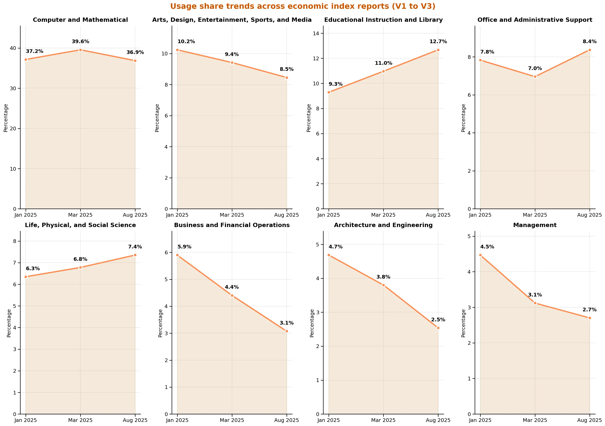
图1.1：Claude.ai使用情况随时间变化。每个面板显示Claude.ai采样对话中与每个SOC主要群体任务相关的份额。我们看到科学和教育任务的使用显著增加。SOC主要群体按我们第一份报告中的使用情况排序。
在更细粒度的层面上，我们记录了任务构成的变化，这些变化似乎与V2和V3之间推出的功能有关。例如，搜索电子资源和数据库大幅增长（0.03% → 0.49%），这可能反映了我们在3月份发布的网络搜索功能。此外，我们还看到基于互联网的研究任务有所增加（0.003% → 0.27%），这与我们在4月份发布的Research模式一致。
我们还看到其他种类的变化。与开发教学材料相关的任务增加了1.3个百分点，从0.2%的基数增长到1.5%——增长超过6倍，这可能反映了教育工作者采用率的增长。创建多媒体文档上升了0.4个百分点，从0.16%增长到0.55%，几乎增长了三倍，这可能是由于我们的Artifacts功能在Claude.ai内构建传统和AI驱动应用程序的持续使用所推动的。
有趣的是，涉及创建新代码的任务份额增长了一倍多，增加了4.5个百分点（从4.1%增长到8.6%），而调试和错误纠正任务下降了2.8个百分点（从16.1%下降到13.3%）——净变化为7.4个百分点，从修复代码转向创建代码。这可能表明模型变得越来越可靠，用户花在修复问题上的时间减少，而在单次交互中创造事物的时间增加。
与之前的报告一样，我们不仅跟踪人们如何使用Claude，还跟踪他们如何在Claude.ai上与Claude协作或委托给Claude。
在高层次上，我们区分使用Claude的自动化和增强模式：
自动化包括专注于任务完成的交互模式：
指令式：用户给Claude一个任务，它以最少的来回交流完成任务
反馈循环：用户自动化任务并根据需要向Claude提供反馈
增强专注于协作交互模式：
学习：用户向Claude询问关于各种主题的信息或解释
任务迭代：用户与Claude协作迭代任务
验证：用户向Claude寻求对其工作的反馈
从Claude.ai对话中采样的指令式对话份额从2024年底V1的27%跃升至V3的39%。这一增长主要以任务迭代和学习交互为代价，这意味着表现出自动化使用模式的对话份额大幅净增长——仅在八个月内就有显著增长。这是自动化使用超过增强使用的第一份报告。
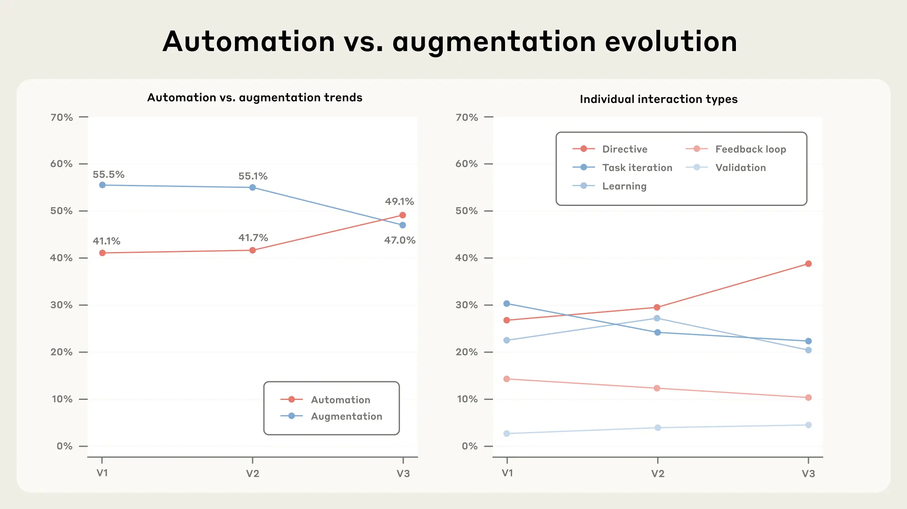
图1.2：Anthropic经济指数报告中的协作模式频率。左面板计算表现出自动化或增强使用形式的对话份额。右面板按协作模式分解。随着时间推移，Claude倾向于以更自动化的方式使用，主要由指令式使用的增加驱动。
一种解释是这是模型能力提升的结果。随着模型在预测用户需求和在首次尝试时产生高质量输出方面的改进，用户可能需要更少的后续完善。指令式使用的跃升也可能表明对将完整任务委托给AI的信心不断增长，这是一种边做边学的形式。
指令式使用的增长是否归因于模型能力的提升或边做边学，可能预示着截然不同的劳动力市场影响。如果更先进的模型仅仅是扩大了自动化任务的集合，那么执行此类任务的工人被取代的风险就会增加。然而，如果指令式使用的增长反映的是边做边学，那么最能适应新的AI驱动工作流程的工人可能会看到更大的需求和更高的工资。换句话说，AI可能对某些工人比其他工人更有利：它可能导致那些具有最强技术变革适应能力的人获得更高工资，而那些适应能力较低的人面临工作中断。这将是未来研究的重要领域。
V3数据显示，AI能力和采用率正在继续进步。基于知识的任务，包括教育和科学应用，继续保持快速增长率，新产品功能似乎正在支持不同类型的工作，而不仅仅是加速现有任务。
最引人注目的是，数据指向将任务越来越多地委托给AI系统——这可能是由于用户对技术的信任以及底层模型能力改进的某种结合。这也可能是由于底层用户群体的变化。本报告的下一章首次按地理位置分解使用情况，使我们能够在未来更清楚地分离时间变化与地理变化。我们将在未来报告中继续密切跟踪这些趋势。
“搜索电子资源，如数据库或资料库，或手动资源获取信息”从0.03%增长到0.49%。“进行基于互联网和图书馆的研究”从0.003%增长到0.27%。
统计数据来自包含”开发教学材料”字符串的任务。
任务整理自频率变化幅度大于或等于0.2个百分点的任务集合。编程创建任务包括：“编写新程序或修改现有程序”(1.5% → 4.9%)，“设计、构建或维护网站”(1.2% → 2.0%)，“编写、分析、审查和重写程序”(1.2% → 0.5%)，“开发新软件应用程序”(0.06% → 0.6%)，“开发事务性网络应用程序”(0.1% → 0.3%)，以及”开发特定应用软件”(0.05% → 0.3%)。调试/错误修正任务包括：“修改现有软件以纠正错误”(两个变体：2.5% → 3.8%和4.8% → 2.7%)，“通过适当更改纠正错误”(3.0% → 2.1%)，“执行初始调试程序”(2.0% → 0.9%)，“诊断、故障排除并解决硬件/软件问题”(1.6% → 2.5%)，“审查和分析计算机打印输出以定位代码问题”(1.3% → 0.9%)，以及”确定网页或服务器问题的来源”(0.9% → 0.4%)。
我们注意到V3使用Claude Sonnet 4进行分类，而V2使用Sonnet 3.7，这使得直接比较变得复杂。为了解决这个问题，我们用Sonnet 3.7重新运行V3数据，仍然发现指令性交互显著上升(尽管绝对水平较低，为45%的自动化，而Sonnet 4为49%)。我们还验证了这一趋势不是由任务组合变化驱动的——向指令性交互的转变出现在广泛的职业类别中，表明它反映了人们与Claude交互方式的真实变化，而不是构成效应。
Nelson和Phelps，1966年《人力投资、技术扩散与经济增长》是教育在装备工人适应变化方面价值的经典参考。另见Goldin和Katz，2008年《教育与技术之间的竞赛》。我们感谢Anton Korinek的观察，即AI本身可能加速AI的扩散和经济影响，因为它扮演了过去技能型工人在新环境中有效运用新技术方面所发挥的角色。
https://www.anthropic.com/research/anthropic-economic-index-september-2025-report [10/46]
AI首先在哪里被采用——以及如何使用——将塑造世界各地的经济结果。通过分析150多个国家和美国所有州的Claude使用模式，我们发现了三个关键动态：早期采用者在哪里，他们使用AI做什么，以及随着采用成熟使用如何演变。这些地理模式为AI的经济扩散提供了现实世界的证据，有助于追踪不同地区是否在AI采用方面趋同或分化，并揭示当地经济特征如何塑造技术部署。
我们的数据依赖于对100万次Claude.ai对话的隐私保护分析，证实了我们的一些预期，同时挑战了其他预期。美国以21.6%的比例主导总使用量，考虑到其规模和高收入，这并不令人意外。但即使在调整工作年龄人口规模后，高收入国家往往有更高的使用率。例如，新加坡的使用率是其工作年龄人口所暗示的4.5倍，而全球大片地区显示出最低的使用量。有趣的是，在美国内部，华盛顿特区和犹他州在人均使用量方面超过了加利福尼亚州。
我们还观察到随着人均采用加深，AI使用案例的变化。人均AI采用率较低的国家主要专注于编程任务——在印度超过一半的使用量，而全球大约三分之一。随着采用成熟，使用多样化，对教育、科学和商业运营的重视日益增加。
更引人注目的是：成熟市场倾向于更协作地使用AI，而新兴市场更可能将完整任务委托给它——这可能反映了处于不同结构转型阶段的经济体在AI部署方式上的差异。我们的数据为这些跨地理模式提供了一个窗口，未来将使我们能够追踪这些采用差距是缩小、扩大还是在结构上发生变化。
https://www.anthropic.com/research/anthropic-economic-index-september-2025-report [11/46] 美国的Claude总使用量最高
Claude的整体采用在地理上高度集中。就全球总使用量而言，美国占最高份额(21.6%)，其次是使用量显著较低的国家(印度为7.2%，巴西为3.7%，见图2.1)。然而，这种集中度受到每个国家人口规模的影响——较大的国家可能仅仅因为其人口规模而拥有更大的使用份额。
图2.1：全球Claude.ai使用份额领先的国家。数据包括Claude.ai免费版和专业版对话。
为了考虑人口规模的差异，我们分析了按工作年龄人口调整的使用量，引入了一个名为Anthropic AI使用指数(AUI)的新指标：对于每个地理区域，我们计算其Claude使用份额和工作年龄人口(15-64岁)份额。然后我们通过将这些份额相除来计算AUI：
该指数显示各国相对于其工作年龄人口是否比预期更多或更少地使用Claude。AUI > 1的地区在调整人口后的使用率高于预期，而AUI < 1的地区使用率较低。
结果显示了小型技术先进经济体的显著集中模式。以色列在全球人均Claude使用量方面领先，Anthropic AI使用指数为7——这意味着其工作年龄人口使用Claude的频率比基于人口预期高出7倍。新加坡以4.57紧随其后，澳大利亚(4.10)、新西兰(4.05)和韩国(3.73)在人均Claude使用量方面位列前五。
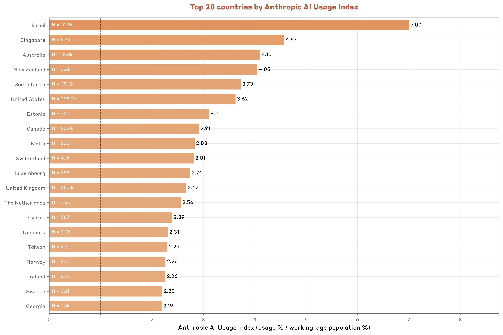
图2.2：小型技术先进国家在人均Claude采用方面领先。该图显示了基于Anthropic AI使用指数的前20个国家。我们仅包括样本中至少有200个观察值的国家，因为对于我们随机样本中低使用量国家的测量存在不确定性。基础数据包括Claude.ai免费版和专业版使用情况。
接下来，我们基于AUI创建人均使用量等级。我们查看在100万次对话随机样本中至少有200次对话的国家，并基于四分位数设置不同使用量等级的阈值，即领先(前25%)、中上(50-75%)、中下(25%-75%)和新兴(后25%)。然后我们将国家(即使观察值少于200个)根据其AUI分配到相应等级。对于我们有人口数据但在样本中没有使用记录的国家，我们将其分配到最小等级。
图2.3展示了全球Anthropic AI使用指数等级，表2.1显示了各等级概览和国家示例。
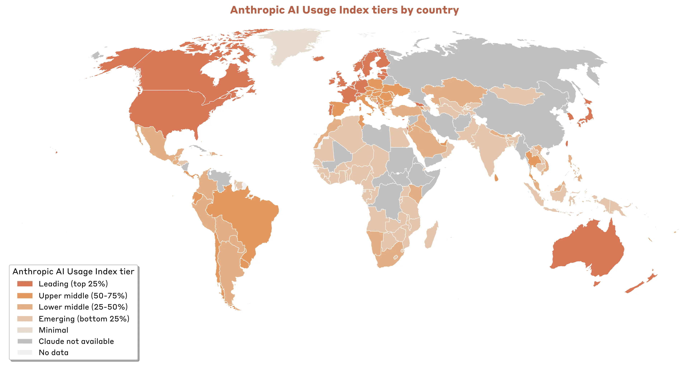
图2.3：Claude传播在各国之间存在差异，北美、欧洲和大洋洲国家在工作年龄人均Claude采用方面领先。不同等级反映了一个国家在本章定义的Anthropic AI使用指数全球分布中的位置。
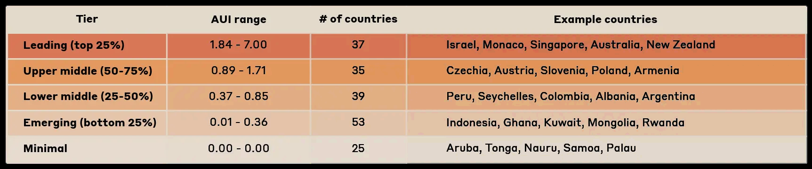
表2.1：Anthropic经济指数等级及示例、国家数量和各等级的AUI范围。
这种在人口规模有限的发达经济体中的集中反映了它们作为技术先驱的既定模式。例如，以色列和新加坡在全球创新指数中排名都很高——这是衡量全球不同经济体创新程度的指标——表明对信息技术的普遍投资为经济体快速采用前沿AI奠定了良好基础。总体而言，这些经济体可以利用其受过教育的劳动力、强大的数字基础设施和创新友好的政策来为AI创造肥沃的条件。
值得注意的是主要发达经济体在Claude使用方面的地位。美国(3.62)在人均采用方面位列领先国家，加拿大(2.91)和英国(2.67)相对于其人口而言采用率较高但更为温和。其他主要经济体显示出较低的采用率，包括法国1.94、日本1.86和德国1.84。
与此同时，许多中低收入经济体显示出最少的Claude使用量，非洲、拉丁美洲和亚洲部分地区的许多国家的Claude采用率低于基于其工作年龄人口的预期水平。这包括玻利维亚(0.48)、印度尼西亚(0.36)、印度(0.27)和尼日利亚(0.2)。
这种使用差异反映了这些经济体之间的收入差异。我们发现Claude采用与工作年龄人均国内生产总值之间存在强正相关关系(见图2.4)，人均GDP每增加1%与人均Claude使用量增加0.7%相关。
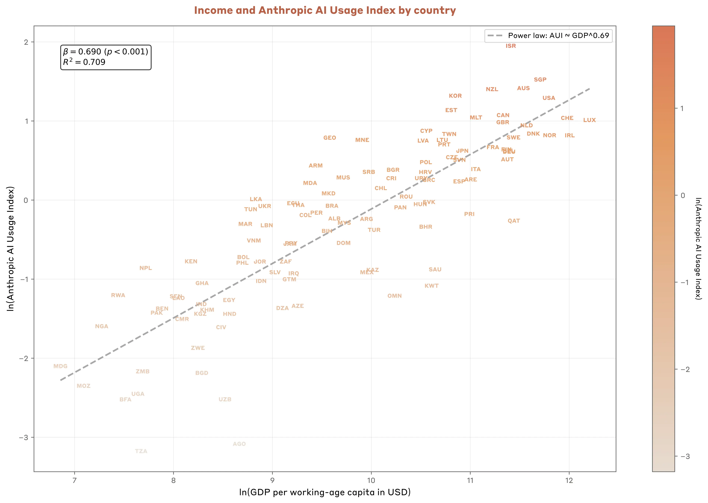
图2.4：各国人均Claude使用量与人均收入呈正相关。我们仅包括样本中至少有200个观察值的国家，因为对于我们随机样本中低使用量国家的测量存在不确定性。坐标轴采用对数刻度，突出了幂律分布。每个国家由其3字母ISO代码表示。
Claude使用差异可能反映了多种因素的汇聚，其中一些与收入相关：
数字基础设施：高使用量国家通常拥有访问AI助手所需的强大互联网连接和云计算访问能力。
经济结构：如本报告和以前的报告所记录，Claude的能力非常适合知识工作者典型的各种任务。发达经济体在此类角色中的劳动力份额往往更大，而收入较低的经济体在制造业的就业份额较大。
监管环境：政府在积极鼓励各行业使用AI以及对该技术进行监管的严格程度方面存在差异。
认知和获取：与硅谷和AI研究社区联系更强的国家可能对Claude有更大的认知度和获取机会。
信任和舒适度：公众对AI信任的看法在不同国家之间存在显著差异。
在美国境内，加利福尼亚州以25.3%的使用率遥遥领先。其他拥有主要科技中心的州，如纽约(9.3%)、德克萨斯(6.7%)和弗吉尼亚(4.0%)也排名靠前。虽然没有根据人口进行调整，但我们怀疑这些强劲的采用数据部分反映了技术中心的快速采用——这与具有经济重要性的技术历史上的传播趋势相一致。
然而，当我们根据各州的人口规模进行调整时，这种叙述变得更加复杂。令人惊讶的是，哥伦比亚特区以3.82的Anthropic AI使用指数领先，表明DC的Claude使用量是其在全国工作年龄人口中所占份额的3.82倍。紧随其后的是犹他州(3.78)，明显领先于加利福尼亚州(2.13)、纽约州(1.58)和弗吉尼亚州(1.57)。[7]
图2.5：在每个工作年龄人口的Claude采用率方面，美国领先的州包括哥伦比亚特区、犹他州、加利福尼亚州、纽约州和弗吉尼亚州。该图显示了基于Anthropic AI使用指数的前20个美国州。由于我们随机样本中低使用率州的测量不确定性，我们只包括样本中至少有100个观察值的州。基础数据包括Claude.ai免费版和专业版的使用情况。
我们记录了与全球层面类似但较弱的相关性，即各美国州的Claude采用率与人均收入之间的关系。收入差异解释了不到一半的跨州采用率变化。尽管相关性较弱，我们发现Claude的采用率随收入增长更快：州GDP人均每增长1%，AI使用指数就会增长1.8%。
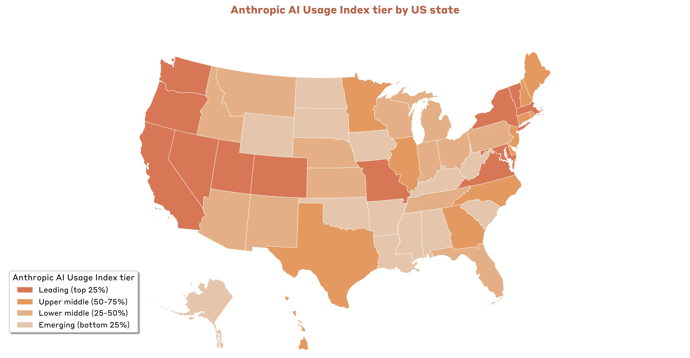
图2.6：Claude的使用在美国各州之间存在差异，西海岸的人均使用率较高，但内华达州、犹他州、科罗拉多州、密苏里州和弗吉尼亚州的使用率也较高。不同的层级反映了美国各州在本章定义的Anthropic AI使用指数美国分布中的位置。
我们观察到Claude在不同国家的使用方式存在显著差异。与以往的报告一样，我们使用两种不同的方法来分析这些趋势。首先，我们根据ONET将对话分类为任务，ONET是美国的分类法，将特定任务映射到职业和职业群体(例如，涉及软件调试的任务将归入计算机和数学职业群体)。
其次，我们使用Claude构建Claude.ai用户请求的自下而上分类法，这为不太适合现有分类法的使用模式提供了洞察。例如，请求集群”帮助撰写和改进求职申请的求职信”(最低级别)输入到更高级别的集群”帮助求职申请、简历和职业文档”(中级别)，后者又输入到集群”帮助求职申请、简历和职业发展”(最高级别)。这两种互补的方法使我们既能报告与标准劳动统计一致的结果，又能提供灵活性来捕获标准分类法遗漏的任务。
当分析在最高级别聚合的O*NET任务时(就它们所属的标准职业分类职业群体而言)，我们注意到各国之间存在强烈差异。虽然总体模式是嘈杂的——特别是对于观察较少的国家——图2.7表明，当我们从较低的人均Claude采用率进展到较高的采用率时，使用从计算机和数学职业群体的任务(例如编程)转向教育、办公和行政用途以及艺术等领域的更多样化任务。我们还看到在生命、物理和社会科学方面的使用增加。
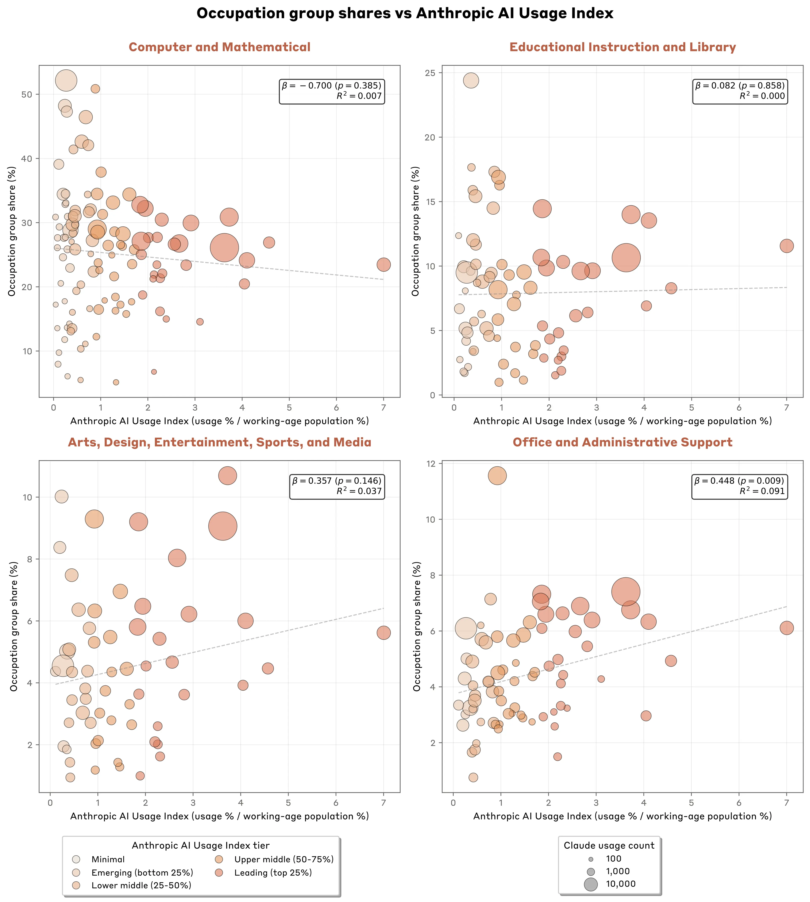
图2.7：当我们从采用率较低的国家转向采用率较高的国家时，Claude的使用似乎从以编程为主的任务转向更多样化的任务组合，尽管总体模式是嘈杂的。该图显示了Anthropic AI使用指数与最频繁的标准职业分类(SOC)职业群体之间的关系。每个面板显示不同的SOC群体。SOC份额基于给定地理区域中有多少O*NET任务属于给定的SOC群体。颜色表示一个国家属于哪个AUI层级。气泡大小表示每个国家的使用计数。由于我们随机样本中低使用率国家的测量不确定性，我们只包括样本中至少有200个观察值的国家。回归对每个国家给予相等权重。
当查看我们的自下而上请求分类法时，国家特殊性也会出现。[8]以美国、巴西、越南和印度为例，它们代表在给定Anthropic AI使用指数层级内总使用量最高的国家。美国用户不成比例地使用Claude进行家庭管理、求职搜索和
[https://www.anthropic.com/research/anthropic-economic-index-september-2025-report] [[20/46] 与全球平均水平相比的医疗指导]
巴西的Claude用户在翻译和法律服务方面的使用率相对较高。
越南最突出的不成比例请求与软件开发和教育相关，而印度最突出的不成比例请求几乎完全专注于软件开发。这可能反映了当地的专业化特色：巴西是司法系统AI应用的早期采用者，而印度拥有庞大的信息技术部门。
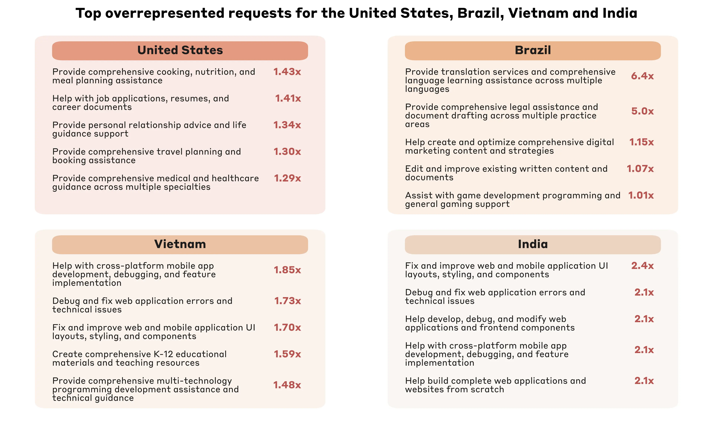
图2.8：美国、巴西、越南和印度的过度代表性请求集群。当某个国家包含该请求的对话份额高于全球时，该请求在该国被过度代表。在此图中，我们关注中等粒度级别的请求集群，即比最低级别请求集群更聚合，但比最高级别请求集群更细化。仅包括在全球和该国频率至少为1%的请求。
在所有国家中，软件开发成为Claude最常见的用途。为什么开发者任务在Claude的整体使用模式中始终占主导地位？几个因素可能促成了这种效应：
模型-任务匹配：Claude是一个非常强大的编码模型，可以轻松部署在代码生成、调试和技术问题解决任务中。
开发者接受度：开发者社区快速接受新工具，这种使用通过他们的社交和专业网络传播。
[https://www.anthropic.com/research/anthropic-economic-index-september-2025-report] [[21/46]]
低组织壁垒：个人开发者通常可以采用Claude而无需复杂的审批流程——这与医疗用例等形成对比。
在本节中，我们探索Claude在美国各州的使用模式，这为我们进一步了解当地经济条件如何塑造使用模式提供了见解。正如我们上面讨论的，Anthropic AI使用指数中的州际差异占美国各州收入差异变化的不到一半。这表明其他地区差异——包括Claude能力与当地劳动力职业构成的兼容性——在决定为什么使用更集中在某些州而非其他州方面发挥了更大作用。
在许多州，我们看到当地AI使用模式与当地经济独特特征相一致的证据。当分析每个使用层级的顶级州——加利福尼亚州为领先级、德克萨斯州为中上级、佛罗里达州为中下级、南卡罗来纳州为新兴级——我们在自下而上的请求分类法方面看到了巨大差异（见图2.9）。
例如，加利福尼亚州在IT相关请求、数字营销和翻译方面表现出不成比例的使用，这可能反映了其技术部门和语言多样化的人口。加利福尼亚州在基本数值任务帮助方面的请求也不成比例地频繁，这可能代表对模型能力的测试或滥用。佛罗里达州在商业建议和健身方面表现出不成比例的使用，这可能与其作为金融中心的角色以及相对较低的税率和适宜户外活动的温暖气候有关。
[https://www.anthropic.com/research/anthropic-economic-index-september-2025-report] [[22/46]]
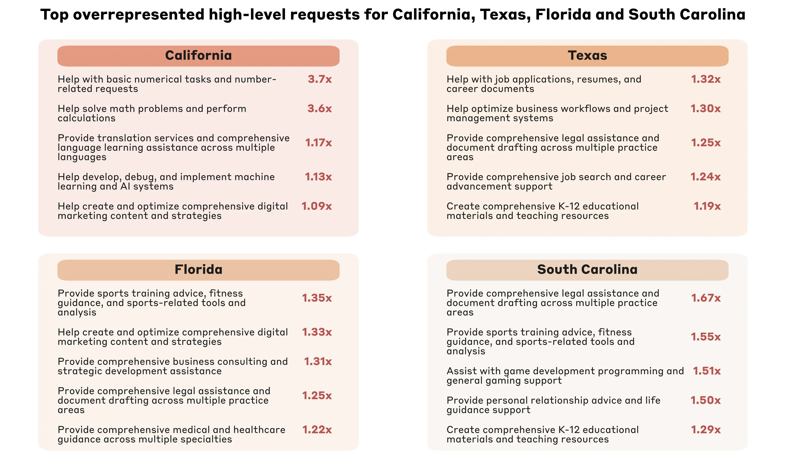
图2.9：加利福尼亚州、德克萨斯州、佛罗里达州和南卡罗来纳州的过度代表性请求类别。当某个州包含该请求的对话份额高于整个美国时，该请求在该州被过度代表。在此图中，我们关注中等粒度级别的请求集群，即比最低级别请求集群更聚合，但比最高级别请求集群更细化。仅包括在美国和该州频率至少为1%的请求。
在美国境内，华盛顿特区在人均Claude使用量方面领先，在O*NET任务分类和自下而上分类中都不成比例地专注于文档编辑、信息提供和求职申请（见图2.10）。例如，在华盛顿特区，求职申请帮助的频率是整个美国的1.84倍。我们的交互式仪表板允许每个人探索美国各州的完整变化范围和模式。
[https://www.anthropic.com/research/anthropic-economic-index-september-2025-report] [[23/46]]
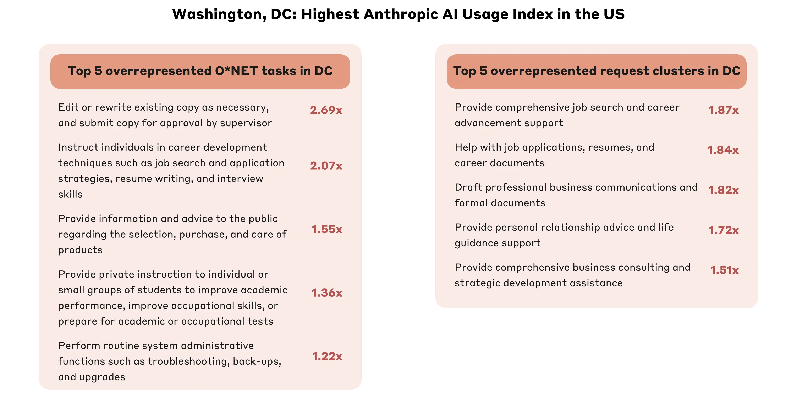
图2.10：华盛顿特区拥有最高的人均Claude使用量，不成比例的任务和请求专注于文档编辑、信息提供和求职申请。ONET任务指ONET分类法中的任务。请求基于描述用户向Claude提出请求的自下而上请求类别。当某个州包含该任务或请求的对话份额高于整个美国时，该任务或请求在该州被过度代表。在此图中，我们关注中等粒度级别的请求集群。仅包括在美国和该州频率至少为1%的请求。
虽然前面的章节研究了人们使用Claude做什么任务，但如何与其交互的模式同样具有启发性。在这里，我们使用与第1章定义的相同的增强和自动化协作模式。
不同国家具有不同的任务组合，这意味着它们专注于不同的经济任务，这可能部分解释了自动化模式的差异。在本节中，我们研究了即使在控制任务组合差异的情况下，低人均采用率经济体和高人均采用率经济体之间的自动化使用是否存在系统性差异。[9]
我们发现，即使在控制一个国家的任务组合时，来自不同国家的用户在自主委托与协作交互方面表现出明显不同的偏好。随着Claude人均使用量的增加，各国从以自动化为重点转向以增强为重点的使用。这有些违反直觉，因为我们控制了不同国家之间更多样化的任务组成。我们推测文化和经济因素可能影响自动化份额，或者可能早期采用者在每个国家都倾向于以更自动化的方式使用AI——但这里需要更多研究。
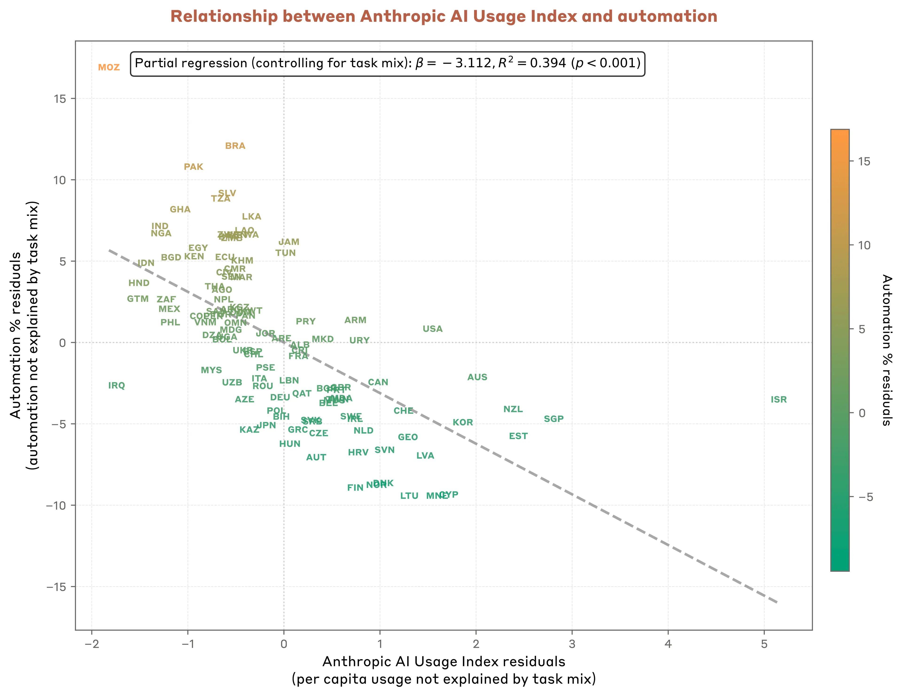
图2.11：Anthropic AI使用指数较高的国家倾向于以更协作的方式使用Claude（增强），而不是让它独立运行（自动化）。此图显示了Anthropic AI使用指数与给定国家自动化份额之间的关系。我们在考虑地理区域的任务组合后绘制了这种关系，因此我们显示了回归残差。由于随机样本中低使用量国家的测量不确定性，我们仅在此图中包含样本中至少有200个观察值的国家。每个国家都由其3字母ISO代码表示。
我们对Claude跨地理区域使用模式的分析揭示了几个关键见解。最引人注目的是Claude使用的地理集中性。美国和加利福尼亚在Claude整体使用方面的领先地位，以及Claude使用与人均收入的强相关性，暗示了与过去技术的相似之处，在这些技术中，初始地理集中和专业化使用是一个关键特征。借鉴先前技术的扩散模式可能有助于我们更好地理解AI的扩散和影响。
令人惊讶的是，地理位置不仅影响AI工具的用途，还影响使用方式。在人均使用量相对较低的经济体中，用户相对偏好将任务委托给Claude（自动化），而在人均使用量高的经济体中，用户更倾向于与Claude进行更协作或基于学习的交互（增强），即使在控制任务组合的情况下也是如此。与任务使用的本地专业化类似，AI协作模式的本地专业化表明AI的影响在不同地区可能非常不同。
AI采用的地理模式——在哪里使用、用于哪些任务以及如何使用——表明，为了实现AI惠及全球人民的潜力，政策制定者需要关注AI使用和采用的本地集中情况，并解决加深数字鸿沟的风险。
出于隐私原因，我们的自动化分析系统过滤掉任何单元格——例如国家和（国家，任务）交集——少于15次对话和5个唯一用户账户。对于自下而上的请求集群(clusters)，我们有更高的隐私过滤标准，至少500次对话和250个唯一账户。
本节数据涵盖2025年8月4日至11日期间的100万次Claude.ai免费和专业版对话，从该期间所有未被标记为潜在信任和安全违规的对话中随机抽样。观察单位是在Claude.ai上与Claude的对话，而不是用户，因此可能包含来自同一用户的多次对话，尽管我们过去的工作表明随机抽样对话与按用户分层抽样不会产生实质性不同的结果。国家和美国州级别的汇总地理统计数据通过每次对话的IP地址进行评估和制表。对于地理定位，我们使用ISO-3166代码，因为我们的IP地理定位提供商使用此标准。国际位置使用ISO-3166-1国家代码，美国州级数据使用ISO-3166-2地区代码，包括所有50个美国州和华盛顿特区。我们排除了来自VPN、任播或托管服务的对话，这是由我们的IP地理定位提供商确定的。
国际位置使用ISO-3166-1国家代码，包括国家和一些地区。
层级阈值（四分位数）基于全球级别至少有200个观察值的国家，以及美国级别至少有100个观察值的美国州。没有观察到使用情况的国家被分配到最小层级，因为我们不知道它们是否完全没有使用或者只是我们的随机样本没有捕获到的少量使用。未来的工作，例如使用分层抽样，将使我们能够在较小国家和州的有限观察值情况下以更高的准确性探索这些模式。
世界地图基于Natural Earth的世界地图，采用ISO标准的争议领土观点，这意味着地图可能不包含一些争议领土。我们注意到，除了以灰色显示的国家（“Claude不可用”）外，我们不在乌克兰的克里米亚、顿涅茨克、赫尔松、卢甘斯克和扎波罗热地区运营。根据国际制裁和我们支持乌克兰领土完整的承诺，我们的服务在俄罗斯占领地区不可用。
[6. “无数据” 适用于部分数据缺失的国家。一些地区（例如，西撒哈拉、法属圭亚那）拥有自己的 ISO-3611 代码。其中一些有使用量，另一些则没有。由于 Anthropic AI 使用指数是基于工作年龄人口计算的，使用的是世界银行的工作年龄人口数据，而这些地区的人口数据并非都容易获得，因此我们无法计算这些地区的 AUI。]
[7. 在进一步调查犹他州的活动时，我们发现其使用量的很大一部分似乎可能与协调滥用有关。这也反映在比平均水平高得多的”指令”自动化得分上。然而，我们进行了稳健性检查，并相信这种活动并未驱动结果。]
[8. 请求被过滤为在全球层面至少代表1%请求量且在本地层面至少代表1%的请求。]
[9. 为了在考虑任务组成差异的情况下分离自动化偏好与 Claude 使用之间的关系，我们执行以下操作：首先，我们通过加权平均计算每个国家的预期自动化百分比。对于每个 O*NET 任务（例如，编程、写作或分析），我们将该任务在该国使用量中的份额乘以该任务类型的全球自动化率（Claude 通过指令/反馈循环模式在全球完成该任务的百分比）。将这些求和，得出每个国家在给定特定任务组合下的预期自动化百分比。然后我们将实际自动化百分比和 AUI 都对这个预期自动化百分比进行回归。这些回归的残差代表每个变量中无法被任务组成解释的变异。通过检查这些残差之间的关系（称为偏回归分析），我们可以确定 AI 使用量高于其任务组合预测值的国家是否也倾向于具有高于预测的自动化水平。]
前沿 AI 能力是否使我们更加高效、重塑劳动力市场并加速增长，将取决于企业何时以及如何选择部署 AI。即使企业认识到 AI 的潜力，盈利地采用它可能需要昂贵的生产流程重组、培训新员工以及其他沉没成本投资来促进有效部署。[1]
为了了解企业对 AI 的采用模式，我们转向一个新的数据源：Anthropic 的第一方 (1P) API 客户——再次依赖隐私保护方法。[2] 我们的 API 允许客户将 Claude 直接集成到他们自己的产品和应用程序中，并按使用的令牌收费，而不是固定订阅费。这与 Claude.ai 代表了根本不同的产品体验，我们在前两章中专注于此。
机构惯性以及采用的固定成本表明，企业使用 AI 的早期示例可能集中在部署容易、能力强大且采用带来的经济效益高的专业化任务上。
确实，我们在本章呈现的数据中看到了这方面的证据。我们的分析揭示了几种模式：
企业以与个人用户相似但更专业化的方式使用 Claude：企业将使用集中在适合程序化访问的 AI 部署的任务上，如编程或管理任务。与 Claude.ai 用户相比，企业在教育或创意任务上使用 Claude 较少，整体上以更自动化的方式使用。
API 客户倾向于偏好更高成本的任务：尽管任务成本差异巨大，最昂贵的任务往往有更高的使用量，这表明模型能力、部署易用性和自动化的经济价值比交互成本本身更能决定采用情况。
复杂部署需要获得适当的上下文信息：我们发现了 AI 对企业有用性的一个重要潜在瓶颈的证据。使用 Claude 执行复杂任务的 API 客户倾向于为 Claude 提供冗长的输入。这可能代表某些重要任务更广泛企业部署的障碍，这些任务依赖于尚未集中或数字化的分散上下文。纠正这一瓶颈可能需要企业重组其组织结构，投资新的数据基础设施，并集中信息以实现有效的模型部署。
在深入我们的 API 数据之前，有必要在企业 AI 采用的更广泛背景下进行定位。根据人口普查局的商业趋势和展望调查，美国企业的 AI 采用在过去两年中增长了一倍多，从 2023 年秋季的 3.7% 上升到 2025 年 8 月初的 9.7%（图 3.1）。[3] 尽管增长率很快，但美国绝大多数企业并未报告在其生产流程中使用 AI。
但这些总体数字掩盖了各行业间的巨大差异。例如，在 2025 年 8 月初，信息行业中四分之一的企业报告使用 AI，这大约是住宿和餐饮服务业比率的十倍。[4]
来自这些公共数据的情况很明确：企业对 AI 的使用正在增长
快速发展，但我们仍处于AI采用的早期阶段。使用情况在整个经济中分布不均，能够快速采用并从这项技术中受益的部门正在这样做。
正如我们将在下面看到的，我们的第一方API数据得出了一个互补的结论：企业对Claude的早期使用同样在整个经济中分布不均，主要部署用于信息部门职业的典型任务。

注： AI采用率计算为对”在过去两周内，该企业是否在生产商品或服务时使用了人工智能(AI)？(AI示例：机器学习、自然语言处理、虚拟代理、语音识别等)“问题回答”是”的企业份额。
为了分析API流量，我们应用了前几章中相同的隐私保护分类方法——通过O*NET任务将匿名API记录分类并建立自下而上的分类体系。出现的模式显示企业使用集中在特别适合自动化的专业化任务上。
总体而言，软件开发占据主导地位。在前15个使用集群中——约占所有API流量的一半——大多数与编码和开发任务相关。调试Web应用程序和解决技术问题各占大约6%的使用量，而构建专业商务软件代表另一个重要部分。值得注意的是，约5%的API流量专门专注于开发和评估AI系统本身（图3.2）。
但并非所有API使用都是为了编码。API客户还部署Claude来创建营销材料(4.7%)和处理商业与招聘数据(1.9%)。这两个类别揭示了AI不仅被部署用于直接生产商品和服务，还用于人才获取和外部沟通。
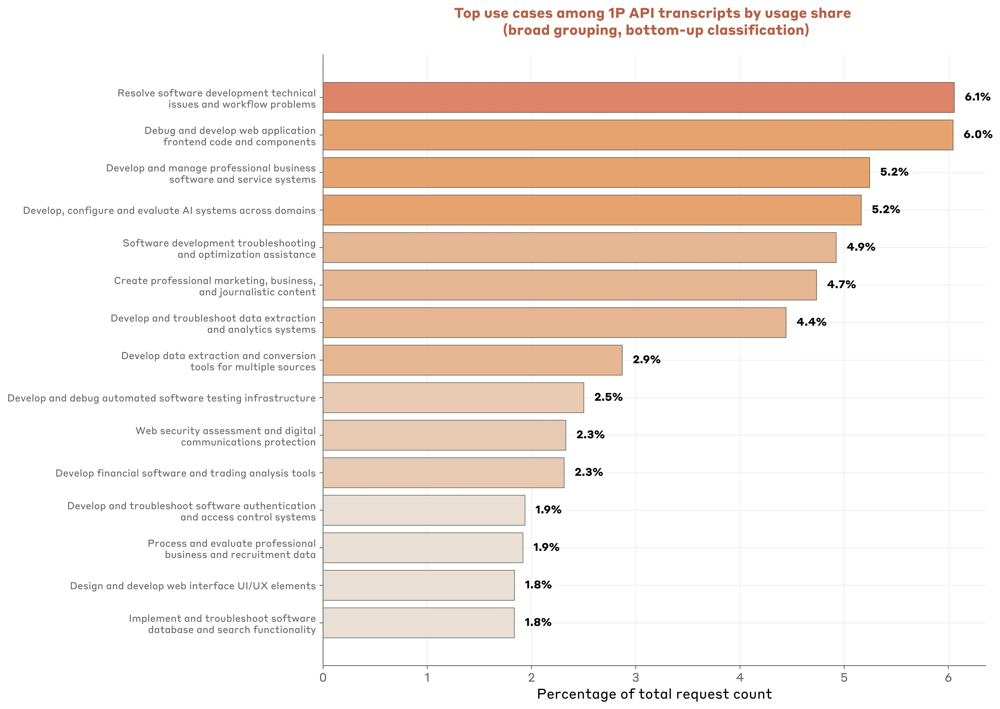
使用隐私保护方法，我们将第一方API记录分类为反映潜在使用情况的自下而上分类体系。此图报告了该分类体系最广泛层面的主要用例。
O*NET分类使这些模式更加清晰。略少于一半的API流量映射到计算机和数学任务——比Claude.ai使用量高出8个多百分点。办公和行政任务以大约10%的记录排名第二，反映了它们对自动化的适用性。
另一方面，在Claude.ai上占重要地位的几个交互密集型任务在API使用中占比要小得多：教育和图书馆任务从12.3%下降到3.6%，而艺术和娱乐从8.2%下降到5.2%。
然而，在许多情况下，Claude.ai和API数据之间的职业类别相当接近，表明在许多情况下是潜在的模型能力，而不是特定的产品界面，推动了采用。
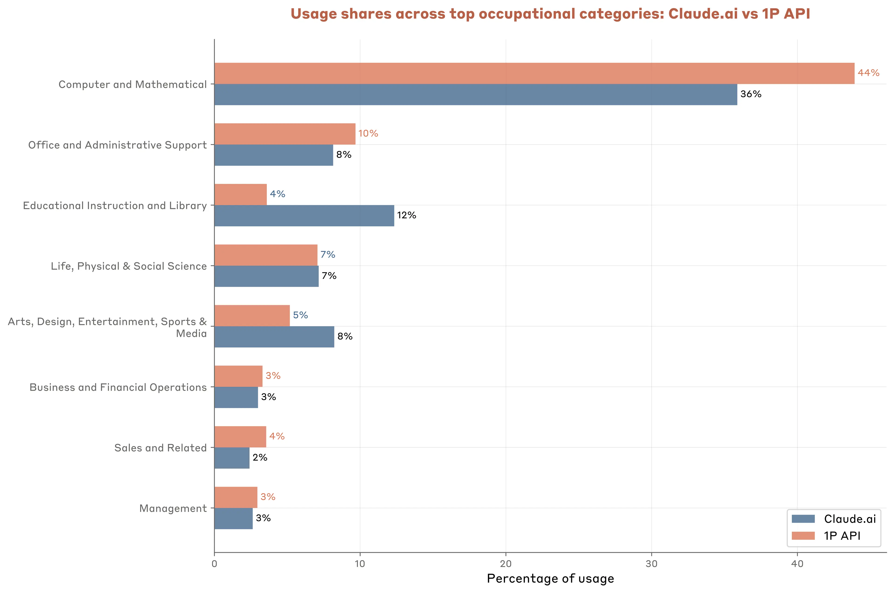
在确定任务的使用份额后，我们计算来自Claude.ai和第一方API客户的流量在O*NET分类体系顶级职业中的分配份额。例如，此图显示我们样本中44%的API流量被匹配到计算机和数学职业的特征任务。
尽管为不同用户提供不同界面，API和Claude.ai使用在任务间遵循非常相似的幂律分布。在Claude.ai对话中，底部80%的任务类别仅占12.7%的使用量；对于API客户，集中度稍高，为10.5%（图3.4）。这些极端集中度（基尼系数分别为0.84和0.86）揭示了AI-任务匹配的巨大差异——最匹配的任务比匹配度差的任务多出几个数量级的使用量。
考虑到不同的用户群体和用例，跨平台的相似性特别令人惊讶。两者都收敛到可比较的集中水平，表明AI能力与相关经济任务之间存在共同的匹配过程。
代码生成等任务占主导地位，因为它们达到了一个最佳点：模型能力出色，部署障碍最小，员工可以快速采用新技术。很少使用任务的长尾可能反映几个因素。例如，一些任务就是不太常见——调试软件比谈判马戏团合同发生得更频繁。极端集中度也暗示了O-Ring力量的潜在作用：如果一个任务需要Claude无法处理的推理水平、企业无法访问的内部数据，或者不存在的监管批准，任何单一障碍都可能阻止采用。

[图3.4：小数量任务中使用集中度的可视化：Claude.ai与1P API。][该图表左侧面板计算了我们Claude.ai和1P API样本中跨O*NET任务的洛伦兹曲线。曲线上的高亮点表示底部80%的任务占总体使用量的比例。][右侧面板绘制了在我们样本中至少占总体使用量0.1%的任务的任务排名与任务使用份额的关系。齐夫定律中，最佳拟合线的系数等于-1，在各种经济环境中时有出现。]
在我们的数据中，77%的API转录显示自动化模式（特别是完全任务委托），而增强模式（如协作改进和学习）仅占12%。基于Claude.ai对话样本，自动化和增强之间的分布几乎均等。从经济任务角度来看，通过API进行Claude自动化的程度甚至更为明显：97%的任务在API使用中显示以自动化为主的模式，而在Claude.ai上仅为47%（图3.6）。
这很有道理。程序化API访问自然适合自动化：企业提供上下文，Claude执行任务，输出直接流向最终用户或下游系统。
这种模式呼应了具有经济影响的技术如何变得具有变革性：嵌入到让工作者无需专业技能即可获得生产力提升的系统中。虽然增强和自动化方法都能提升人类能力，但系统级自动化可能在整个经济中产生更大的生产力提升，以及对劳动力市场更重大的变化：完全自动化某些任务，改变各种工作中重要任务的性质，甚至产生全新的工作形式。
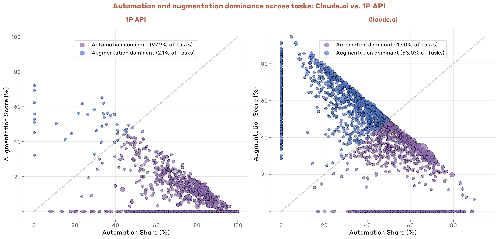
[图3.5：跨O*NET任务的自动化与增强协作模式：Claude.ai与1P API。][该图报告了每个O*NET任务中表现出自动化或增强使用模式的Claude.ai对话和1P API转录的份额。][自动化和增强模式在第1章中定义。当出于隐私保护原因我们无法观察到特定协作模式的使用份额时，在此图中给该类别赋值0%。自动化主导定义为任务具有更大的观察到的自动化使用份额。增强主导同理。]
为什么我们的API客户在某些任务上比其他任务更多地使用Claude？除了基础模型能力外，一个潜在的重要解释是，对于某些任务来说，为Claude提供成功部署所需的信息比其他任务更容易。
例如，如果目标是让Claude在复杂的软件开发项目中重构一个模块，Claude可能需要阅读——或至少探索——整个代码库，以了解要进行哪些更改以及在哪里进行。对于具有集中式代码库的软件开发，原则上获取此信息是直接的。
对于其他任务，适当的上下文可能不容易获得，或者可能难以访问。例如，要求Claude为重要客户制定销售策略可能需要Claude不仅能够访问客户关系管理系统中包含的信息，还要访问存在于客户经理、营销人员和外部联系人头脑中的隐性知识。在其他条件相同的情况下，缺乏对此类上下文信息的访问将使Claude能力降低。
我们通过查看任务间平均API输入长度（即提供给Claude的上下文）与Claude平均输出长度（即模型响应产生的内容）之间的关系来探索这个问题。
对于我们样本中的每个O*NET任务，我们计算相关API转录的平均输入和输出长度。然后我们将这些值除以样本中所有任务的平均长度。这为每个任务产生了输入标记指数和输出标记指数。例如，指数值1.5意味着与该任务相关的API转录比任务间平均长度长50%。
Claude的API输出在任务间的长度存在相当大的变化。例如，输出长度第90百分位的任务比第10百分位的任务长超过4倍。表3.1提供了示例O*NET任务，以及Claude Sonnet 4对该分布部分任务组的总结。图3.7显示输出长度在职业类别间也存在系统性变化。
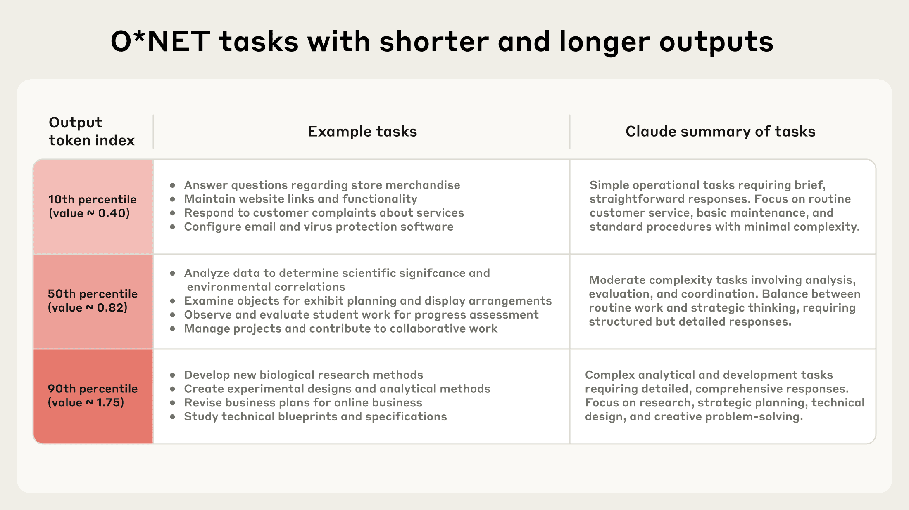
对于与1P API流量匹配的每个O*NET任务，我们计算输出令牌索引：将与该任务相关的转录本的平均输出长度除以我们样本中所有任务的平均（未加权）值。Claude被提示识别输出令牌索引分布的第10、50和90百分位数的任务，指导最少：“列应为’示例任务’、‘索引值’、‘摘要’，您提供摘要”。Claude将输出长度与任务复杂性相关联。
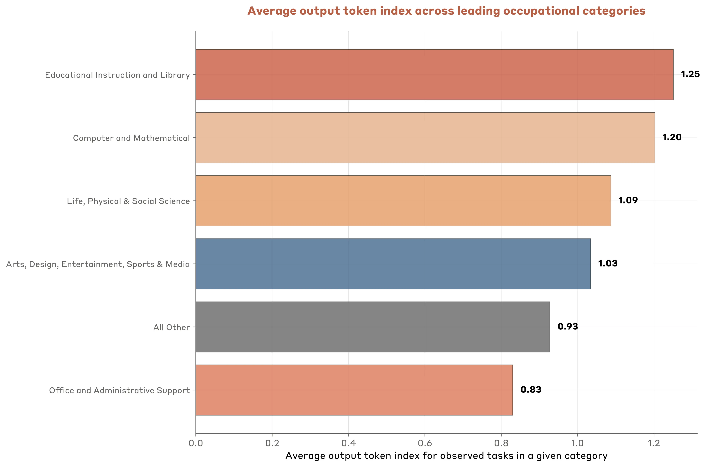
对于与1P API流量匹配的每个ONET任务，我们计算输出令牌索引：将与该任务相关的转录本的平均输出长度除以我们样本中所有任务的平均（未加权）值。然后我们对顶级使用职业群体的ONET分类法中给定顶级职业类别的任务进行平均。“所有其他”将剩余的职业群体合并为单一类别。
Claude对任务评估的突出之处在于，更长输出的任务往往代表着越来越复杂的用途。当然，输出长度并不能捕捉任务复杂性的所有维度，但它似乎是一个合理的、易于测量的代理指标。
由于API客户对输入令牌和输出令牌都按边际定价，他们有动机优化模型提示，以在使用Claude时最小化输入和输出令牌。反过来，输入长度和Claude产生的输出之间的任何系统性关系部分反映了在复杂任务中部署Claude的潜在上下文约束。换句话说，API客户被激励只为Claude提供足够完成目标的上下文，而不是更多。因此我们了解了不同输出长度任务的上下文需求。
纵观各种任务，我们看到API客户向Claude提供多少上下文与Claude实际产生多少输出之间存在非常稳定的关系。在经济任务中，输入长度每增加1%，输出长度增加不成比例的0.38%（图3.7）。这个0.38的弹性表明，对于这些经济有用的任务，将更长的上下文输入转化为更长输出存在强烈的边际收益递减效应。
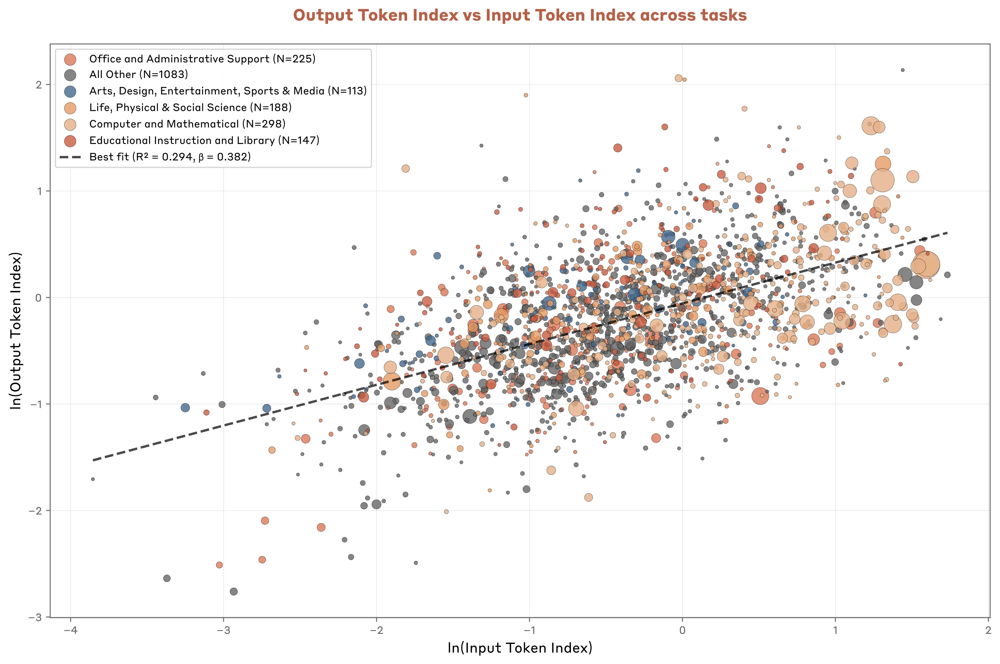
对于与1P API流量匹配的每个O*NET任务，我们计算输出令牌索引：将与该任务相关的转录本的平均输出长度除以我们样本中所有任务的平均（未加权）值。输入令牌索引以类似方式构建。0.38的弹性意味着输入令牌索引每增加1%，输出令牌索引相应增加0.38%。
结论是，部署AI执行复杂任务可能更多地受到信息获取的限制，而不是底层模型能力的限制。无法有效收集和组织上下文数据的公司可能在复杂的AI部署方面遇到困难，这为更广泛的企业采用创造了潜在瓶颈——特别是对于那些隐性、分散知识对业务运营至关重要的职业和行业。
API客户按令牌付费，这造成了部署Claude执行不同任务的成本差异。更复杂的任务往往成本更高，因为它们的输入和输出令牌数量更多。这种差异帮助我们探索成本是否是决定企业选择使用Claude自动化哪些任务的主要因素。
数据表明，至少相对而言，情况并非如此。例如，计算机和数学职业的典型任务成本比销售相关任务高出50%以上，但却主导着使用量。总的来说，我们发现成本和使用量之间存在正相关关系：成本较高的任务往往有较高的使用率（图3.9）。
成本与使用量之间的正相关关系表明，成本在塑造企业AI部署模式方面发挥着不重要的作用。相反，企业可能优先在模型能力强的领域使用，以及Claude驱动的自动化产生足够经济价值超过API成本的领域。
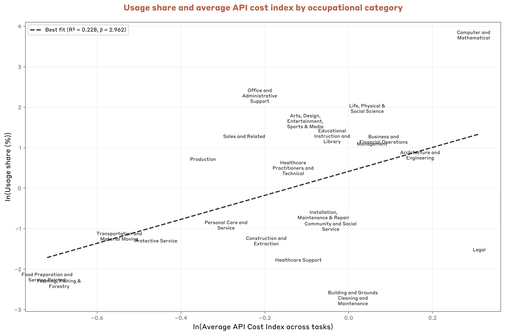
对于与1P API流量匹配的每个O*NET任务，我们计算API成本索引：将与该任务相关的转录本的平均API成本除以我们样本中所有任务的平均（未加权）值。此图绘制了给定职业类别中任务的平均API成本索引与使用份额的关系。估计的弹性为3，意味着任务平均成本每增加1%，在我们样本中的普遍性就会增加3%。
虽然这种正相关关系总体上成立，但我们接下来询问在其他方面相似但成本更高的任务中，对Claude能力的需求是否较低。需要注意的是，这应该被视为初步探索，这就是我们的发现。
在控制任务特征的情况下，我们发现成本每增加1%
在我们的API记录样本中，价格每上涨1%，使用频率就会下降0.29%（图3.10）。[13] 虽然这符合价格上涨导致需求下降的标准经济理论，但成本下降所暗示的使用量增长是有限的。根据这一估算，特定任务的成本下降10%只会将使用量增加约3%。
除了使用Claude执行特定任务的成本之外，其他因素对使用模式的影响似乎更大。
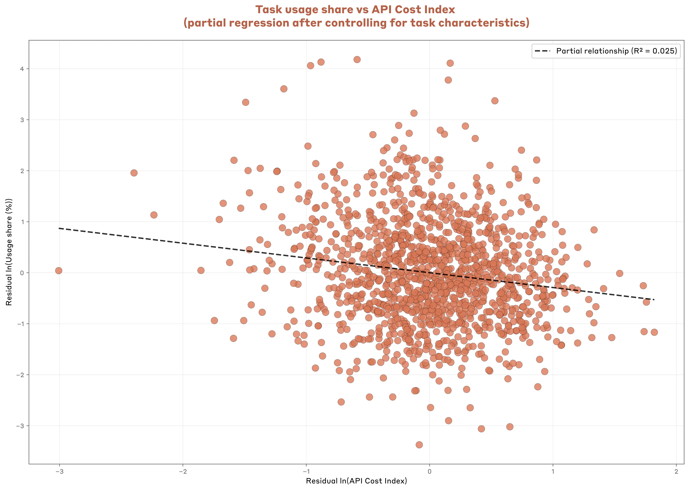
图3.9：控制任务特征后，每个任务的API成本与使用份额的散点图。对于与1P API流量匹配的每个O*NET任务，我们计算API成本指数：将与该任务相关的记录的平均API成本除以我们样本中所有任务的平均（未加权）值。然后我们将样本限制为同时出现在1P API和Claude.ai样本中的任务。这个部分散点图控制了以下任务级特征：职业类别的固定效应、来自Claude.ai的协作模式份额，以及在Claude.ai样本中出于隐私保护原因是否对给定协作模式进行了审查的指标。估计的弹性-0.29意味着，在控制任务特征后，给定任务的API成本指数每增加1%，在我们样本中的流行度就会下降0.29%。
我们的API数据捕捉到了企业AI采用的早期阶段：高度集中、专注于自动化，且价格敏感性出人意料地低（至少在我们的API客户使用Claude的任务中如此）。
77%的自动化率表明企业使用Claude来委托任务，而不是作为协作工具。这种系统性部署可能是AI在经济中带来更广泛生产力提升的重要渠道。考虑到商业部署中明确的自动化模式，这也可能给劳动力市场带来干扰，潜在地取代那些角色最有可能面临自动化的工人。
但对劳动力市场的影响并不完全明确。正如我们在上文所记录的，复杂任务需要更多的上下文信息(context)。这些信息可能分散在各个组织中。在这种条件下，具有关于业务运营的隐性知识(tacit knowledge)的工人可能会从作为复杂AI驱动自动化的补充中受益。[14] 理解AI采用对劳动力市场的不均衡影响是未来研究的重要领域。
希望有效采用AI的企业可能需要重新构建他们组织和维护前沿系统所依赖信息的方式。当今狭窄的、以自动化为主的采用是否会向更广泛的部署演进，可能将决定AI未来的经济影响。
[1. 在存在调整固定成本的情况下，企业面临的问题不一定是是否采用AI，而是何时采用。参见Hall和Kahn 2003，《新技术的采用》：“关于这种决策最重要的观察是，在任何时间点上，所做的选择不是采用与不采用之间的选择，而是现在采用还是将决策推迟到以后的选择。”]
[2. 本节数据涵盖2025年8月的100万份记录，从构成我们约一半1P API使用量的1P API客户池中随机抽样。我们继续根据我们的隐私和保留政策管理数据，我们的分析符合我们的条款、政策和合同协议。每条记录都是我们样本期间的一个提示-响应对，在某些情况下是多轮交互的中期会话。]
[3. 注意这与本报告引言中的采用措施不同。据报告，消费者和员工对AI的采用在2024年达到40%，而在企业层面衡量时，美国十分之九的企业报告未使用AI。]
[4. 由人口普查局发布的商业趋势和展望调查(BTOS)是美国企业AI采用的可靠晴雨表。我们用来衡量AI采用的调查问题是：“在过去两周内，这家企业是否在生产商品或服务时使用了人工智能(AI)？（AI示例：机器学习、自然语言处理、虚拟代理、语音识别等）”。参见Crane、Green和Soto 2025，《衡量AI在工作场所的应用》，以了解BTOS与企业AI整体采用的其他衡量标准的比较。]
[5. 基尼系数(Gini coefficient)是用于量化分布内不平等程度的指标，例如任务使用的分布。它的范围从0到1，其中0代表完全平等（每个任务具有完全相同的使用份额），1代表完全不平等（一个任务占所有使用量，其他每个任务都没有）。]
[6. 经济环境中的幂律(Power laws)是一种实证规律，齐夫定律(Zipf’s law)就是著名的例子。产生这种结果的模型既具有潜在的异质性，又具有有意的、优化的决策制定。更多信息，参见Gabaix 2016，《经济学中的幂律：入门》。]
[7. Kremer 1993，《经济发展的O环理论》。]
[8. API输入长度是指API消息、系统提示和发送给模型的任何其他内容中的文本，包括与手头任务相关的文件和数据集。输出长度是指Claude对API调用生成的响应。]
[9. Claude被要求识别ONET任务分布第10、50和90百分位的任务，最小组织形式为”列应为’示例任务’、‘指数值’、‘摘要’，您在其中提供摘要”。]
[10. 另一个促成因素可能是某些模型在较长上下文长度下性能下降。参见Liu等人，2023年，《迷失在中间：语言模型如何使用长上下文》。]
[11. 我们在本节中提出的问题是，在其他条件相同的情况下，任务间的成本差异是否影响相对使用模式。这与研究Claude的整体使用是否对外部竞争定价压力敏感是不同的。]
[12. 为了证明这一点，我们首先将在API样本中识别的ONET任务按广泛的职业类别进行汇总，以衡量每个类别的总体使用份额和每项任务的平均成本。与ONET任务报告的输入和输出令牌一样，我们通过样本中观察到的任务平均值对每项任务的平均成本进行标准化。]
[13. 控制变量包括广泛职业类别的固定效应，以及来自我们同期采样的Claude.ai对话中按任务的协作模式份额。由于某些任务的协作模式份额被截尾，我们还包括特定模式是否缺少数据的指标。我们将注意力限制在API样本和Claude.ai样本中都识别出的任务集合上。]
[14. 例如，参见Ide和Talamaś，2025年，《知识经济中的人工智能》。]
这份Anthropic经济指数报告的第三次迭代捕捉了AI采用的关键节点。考虑到技术的广泛适用性，Claude和其他前沿AI系统的现有能力已经准备好改变经济活动。快速发展的AI能力只会加强这样的结论：巨大的变化即将到来。
然而，早期AI采用呈现出显著的不平衡。使用目前集中在少数任务上，地理差异很大，与收入高度相关——特别是在不同国家之间。这种集中反映了AI能力、部署便利性和经济价值的一致性：编程和数据分析使用率很高，而需要分散上下文或复杂监管导航的任务则相对滞后。
Claude的早期商业采用既与消费者使用相似（编程是两者最常见的用途），又在几个重要方面有所不同。特别是，通过API对Claude的程序化访问，企业倾向于以更高的自动化程度使用Claude。这种系统性的企业部署反映了AI如何准备重塑经济活动：提高整体生产力，但对那些现有职责已被自动化的工人的影响尚不确定。
这些模式有可能造成分化。如果AI的生产力提升集中在已经繁荣的地区和自动化就绪的部门，现有的不平等可能会扩大而不是缩小。如果AI自动化提高了具有隐性组织知识的工人的生产力——正如我们的一些证据所表明的——那么更有经验的工人可能会看到需求增加和工资提高，即使入门级工人面临更糟糕的劳动力市场前景。
在我们之前发布的基础上，本次指数报告标志着范围和透明度的重大扩展。我们现在开源综合API使用数据，以及现有的Claude.ai消费者数据（现在包括州和国家级别的地理细分），所有这些都与详细的任务级分类相交叉。
通过公开这些数据，我们希望能够让其他人调查我们未考虑的问题，测试关于AI经济影响的假设，并制定基于实证证据的政策回应。
最终，变革性AI的经济效应将同样受到技术能力和社会政策选择的影响。
历史表明，技术采用的模式并非固定不变：随着技术成熟、互补创新出现以及社会对其部署做出有意识的选择，模式会发生变化。我们今天观察到的高度集中使用模式可能会朝着更广泛的分布方向发展——一种能够捕捉更多AI生产力增强潜力、加速滞后部门创新并实现新形式经济价值创造的分布。
我们仍处于这种AI驱动的经济转型的早期阶段。政策制定者、商业领袖和公众现在采取的行动将塑造未来几年。随着AI能力的提升，我们将继续跟踪这些模式，并为导航这一时代最重大的经济转型之一提供实证基础。
Ruth Appel、Peter McCrory、Alex Tamkin*
Miles McCain、Tyler Neylon、Michael Stern
主要作者。对本报告贡献相等
有用的评论、讨论和其他帮助：Alex Sanchez、Andrew Ho、Ankur Rathi、Asa Kittner、Ben Merkel、Bianca Lindner、Biran Shah、Carl De Torres、Cecilia Callas、Daisy McGregor、Dario Amodei、Deep Ganguli、Dexter Callender III、Esin Durmus、Evan Frondorf、Heather Whitney、Jack Clark、Jakob Kerr、Janel Thamkul、Jared Kaplan、Jared Mueller、Jennifer Martinez、Kaileen Kelly、Kamya Jagadish、Katie Streu、Keir Bradwell、Kelsey Nanan、Kevin Troy、Kim O’Rourke、Kunal Handa、Landon Goldberg、Linsey Fields、Lisa Cohen、Lisa Rager、Maria Gonzalez、Mengyi Xu、Michael Sellitto、Mike Schiraldi、Olivia Chen、Paola Renteria、Rebecca Jacobs、Rebecca Lee、Ronan Davy、Ryan Donegan、Saffron Huang、Sarah Heck、Stuart Ritchie、Sylvie Carr、Tim Belonax、Tina Chin、Zoe Richards
@online{appelmccrorytamkin2025geoapi, author = {Ruth Appel and Peter McCrory and Alex Tamkin and Michael Stern and Miles McCain and Tyler Neylon}, title = {Anthropic经济指数报告：不均衡的地理和企业AI采用}, date = {2025-09-15}, year = {2025}, url = {www.anthropic.com/research/anthropic-economic-index-september-2025-report}, }
研究 Anthropic经济指数：追踪AI在美国和全球经济中的作用 2025年9月15日
研究 Claude Opus 4和4.1现在可以结束罕见的子集对话 2025年8月16日
研究人格向量：监控和控制语言模型中的性格特征 2025年8月1日
产品 API平台 Claude概述 API概述 Claude Code 开发者文档 Max计划 Amazon Bedrock中的Claude Team计划 Google Cloud的Claude Vertex AI 企业计划定价下载Claude应用控制台登录 Claude.ai定价计划 Claude.ai登录
研究 Claude模型研究概述 Claude Opus 4.1 经济未来 Claude Sonnet 4 Claude Haiku 3.5
承诺 解决方案透明度 AI代理负责任的扩展政策 编程安全和合规 代码现代化客户支持教育金融服务政府
学习 探索 Anthropic学院 关于我们
[Anthropic 工程团队] [活动]
[帮助和安全] [条款和政策]
[状态] [隐私选择]
[使用政策]
[https://www.anthropic.com/research/anthropic-economic-index-september-2025-report] [[46/46]]